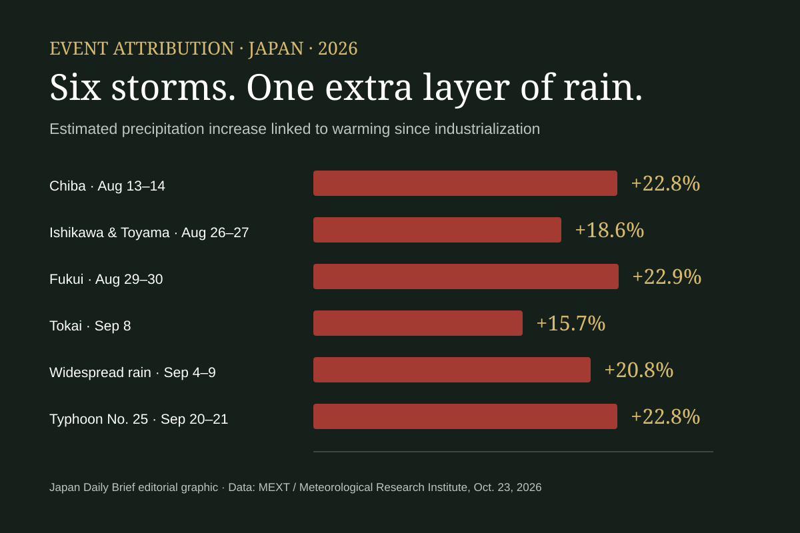

YUJI @ Japan
YUJI @ JapanAt 9:00 p.m. on Sunday, Typhoon 30 stopped being a typhoon west of Kyushu. The classification changed. The atmosphere did not suddenly become dry, rivers did not reset, and the stationary front stretched across Japan did not disappear.
That difference between a name and a mechanism is the most important weather fact in Japan today. The former typhoon is moving east as an extratropical low, but it continues to carry warm, moisture-rich air toward a front near Honshu. Where that air rises, clouds can repeatedly produce intense rain even when the storm’s familiar circular icon has vanished from the map.
The Japan Meteorological Agency’s nationwide explanation, issued at 4:48 p.m. Sunday, forecast up to 250 millimeters of rain in Shikoku during the 24 hours ending at 6:00 p.m. Monday. The corresponding maxima were 200 millimeters for northern Kyushu, Kanto-Koshin and the Izu Islands; 150 millimeters in southern Kyushu; 120 millimeters in Kinki; 100 millimeters in Tokai; and 80 millimeters in Hokuriku and Chugoku.
Those are regional forecast maxima, not a promise that every location will receive that amount and not a report that the rain has already fallen. A localized band can deliver much more than a nearby gauge, while another town in the same region can receive less. The correct response is to follow current municipal and JMA information, not to treat one national number as a neighborhood forecast.
The disappearance of the typhoon label describes the storm’s internal structure. It does not certify safety. In this case, the danger is being transferred into a wider system: moist air, a low-pressure area and a front extending across the country.
What “extratropical” actually changed
A tropical cyclone draws its energy mainly from warm ocean water and has a relatively warm core. An extratropical cyclone is driven by contrasts between warm and cold air. During transition, the wind and rain field can spread outward rather than simply weaken in place.
That is why the sentence “the typhoon is gone” can be misleading. The agency no longer tracks the system under the same tropical-cyclone category, but rain-producing air can continue travelling with the low and along the front. A storm can lose its numbered identity while keeping enough moisture and circulation to disrupt daily life.
The front is the second half of the story. JMA expected it to remain near Japan’s southern coast through Monday night. The former typhoon’s low was forecast to move from Kyushu toward Shikoku and then become indistinct. “Indistinct” on a weather chart does not mean all its water disappears; it means the low-pressure center becomes harder to define inside the larger frontal pattern.
This mechanism explains why rain warnings can appear far from the track people remember seeing. A resident in Kanto may be hundreds of kilometers from the former center yet still receive heavy rain because the moisture plume meets the front there. The relevant map is the current warning and radar map, not yesterday’s line of cyclone positions.
The scale hidden inside 250 millimeters
Two hundred fifty millimeters equals 250 liters of water over every square meter if it all falls and remains there. Across a ten-square-meter balcony, that theoretical volume is 2,500 liters. Real landscapes drain, absorb and channel water, but the conversion makes the scale easier to picture.
Damage does not follow rainfall totals alone. A steep slope may fail after soil has been saturated by earlier rain. A river can rise from water that fell upstream where the sky is no longer dark. Urban drains can be overwhelmed by a short burst even when the day’s total seems smaller than a mountain station’s.
JMA therefore separates several hazards: landslides, inundation of low-lying ground, river flooding, lightning, strong gusts and high waves. A warning for one does not automatically describe all the others. The agency’s Kikikuru risk maps use color levels to show how landslide, flood and inundation danger is evolving at a finer scale.
Transport decisions also vary by operator and route. A national forecast cannot confirm whether one train, ferry, road or flight is operating. Travellers should check the operator immediately before departure and avoid crossing a flooded road simply because navigation software still shows it as open.
Why late October does not make this ordinary
Japan’s climatological typhoon season peaks earlier, but tropical cyclones can still form and influence the country in autumn. Number 30 itself tells readers that many named systems formed in the western North Pacific during 2026; it does not mean thirty typhoons struck Japan.
The name attached internationally to Typhoon 30 was Champi. Regional naming is coordinated through the World Meteorological Organization’s Typhoon Committee, while Japan commonly communicates numbered systems domestically. Both labels identify the same cyclone, and neither says how much rain a particular Japanese valley will receive.
The system had been very powerful over warmer waters before weakening and turning. By the time its center approached western Japan, the main public-safety story was no longer peak tropical wind. It was the interaction between remnant moisture and the autumn front. That shift can look like improvement on a track map while producing a broader rain problem.

What has and has not been confirmed
At this article’s 1:30 p.m. cutoff, the most reliable nationwide statement is a hazard statement: the former typhoon and front were producing a risk of heavy rain across multiple regions. This edition does not claim a national casualty or damage total because preliminary local reports can change and must be consolidated by authorities.
The Ministry of Land, Infrastructure, Transport and Tourism opened a disaster-information page for Typhoon 30 and the front on October 24. That page is the correct place to follow official transport, river and infrastructure updates as new reports are issued. Municipal evacuation orders remain local and time-sensitive.
The forecast also extends beyond the last raindrop. Landslide danger can stay elevated after rain weakens because water remains inside slopes. Rivers can crest later than the downpour at a reader’s location. A bright patch of sky is not, by itself, an all-clear.
The Japanese word behind the alert
Keikai—警戒—means vigilance, caution or being on alert. The first character, 警, carries the sense of warning; 戒 means to guard against or be cautious. Weather bulletins use the word when a hazard deserves active attention, not when panic is useful.
A natural example is 土砂災害に警戒してください—“Please remain alert for landslides.” The sentence asks for behavior: watch official information, recognize dangerous terrain and move before a route becomes unsafe. Readers can practice words like this for free in the Japanese Training Lab, with no signup required, or learn Japanese while playing in DraMap for iOS.
What to watch next
The key questions this afternoon and evening are whether rain bands remain over the same basins, whether JMA raises or lowers warnings, and whether municipalities issue evacuation information. Typhoon 31 is also being monitored farther south, but it is a separate system; its existence should not distract from the immediate rain already affecting Japan.
For overseas readers, the lesson is simple and portable: cyclone categories describe meteorology, not a universal danger switch. When a Japanese alert says a typhoon has become an extratropical low, keep reading. The next sentence—about the front, rainfall, rivers and slopes—may matter more than the vanished name.